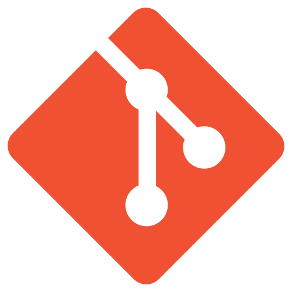

WELCOME TO
WEBSITE PORTOFOLIO
Welcome to my digital portfolio. I specialize in building modern and responsive websites with a focus on performance and user experience. Here you can explore my work, skills, and creative journey in web development.

Ananda Astika
Web Develover
Bali/Indonesia
I’m a creative frontend developer who loves building interactive and visually engaging web experiences. I enjoy turning ideas into reality through clean code, modern design, and smooth animations.

Workout
I enjoy going to the gym to stay physically strong and disciplined. It helps me build consistency, improve my health, and maintain a balanced lifestyle.

Programing
I enjoy programming as a way to create, solve problems, and bring ideas to life. It allows me to keep learning and improving my skills in building modern web experiences.
HTML
I use HTML to build clean, structured, and responsive web layouts. I focus on writing efficient code that supports modern design and user-friendly experiences.
CSS
I use CSS to create modern, responsive, and visually engaging designs. I enjoy working with layouts, animations, and effects to build smooth and interactive user experiences.
JAVASCRIPT
I am skilled in modern JavaScript, including DOM manipulation, working with APIs, and handling JSON data. I build dynamic and interactive web applications with a focus on performance and clean code.
BOOTSTRAP
I use Bootstrap to quickly design responsive and modern interfaces. I customize components to create clean, user-friendly, and visually appealing layouts.
PHP
I have a basic understanding of PHP and can build simple dynamic web features. I am able to handle forms, process data, and connect basic backend functionality.

GIT
Skilled in Git, I manage version control using branching, merging, and commit history to maintain clean and organized code.